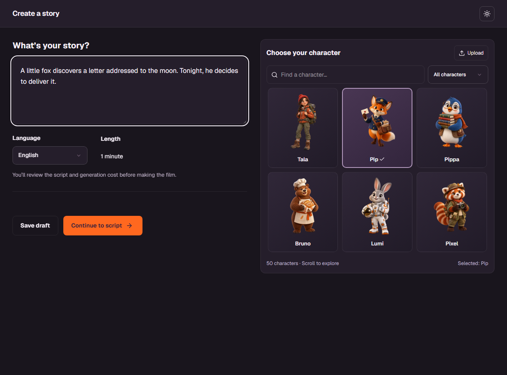

Your cast
50 characters, or upload your own.
OPEN SOURCE · SELF-HOSTABLE
Choose your cast, write your story, and generate a one-minute film with your own AI provider keys.

50 characters, or upload your own.
Shape six scenes and review the cost.
Preview each clip and export an MP4.
Node.js, SQLite and FFmpeg.
Configure sign-in, then connect fal or Higgsfield.
git clone https://github.com/thehiggsfieldai/OpenHiggsfield.git
cd OpenHiggsfield
cp .env.example .env
# Set your origin, auth secret and email settings.
docker compose up --build -dProvider usage and hosting have costs. The hosted site is a preview; see the README for current limitations.